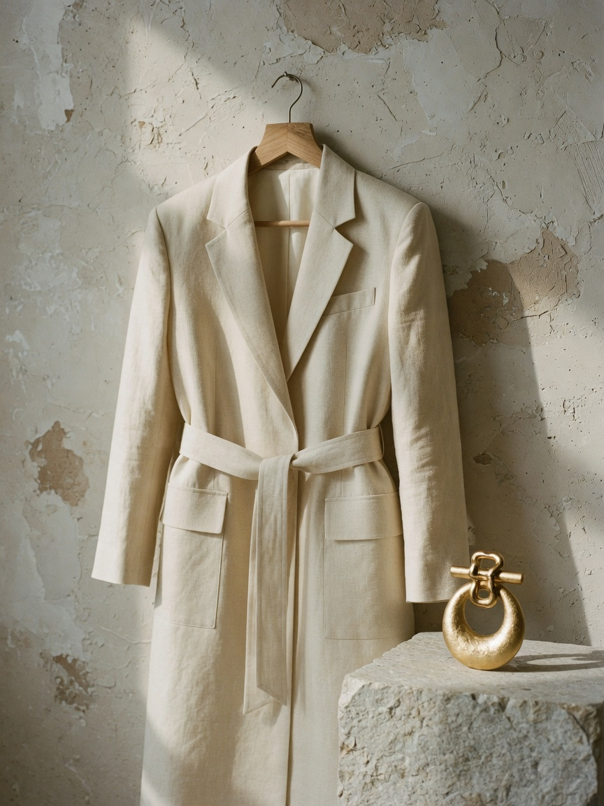

Estudo de caso · Moda
Atelier Bruma
Uma casa de roupa que recusou o calendário da moda — e precisava de uma marca à altura dessa recusa.

O problema
A coleção era lenta, tátil, quase doméstica. A marca falava como revista: drop, season, must-have. Havia um abismo entre a peça e a frase que a anunciava.
A tese
Bruma é o instante em que o tecido ainda segura o calor do corpo. A marca precisava parecer um ateliê que abre a porta, não uma grife que pede atenção.
Tiramos o calendário. A marca passou a ter estações próprias.

O que fizemos
- Sistema verbal sem jargão de passarela.
- Identidade em linho, pedra e um único ouro.
- Campanha still-life — a peça, nunca o espetáculo.
- Loja digital com poucas peças à vista e nenhuma urgência falsa.


O resultado
Ticket médio subiu 34%. A lista de espera da peça-assinatura ficou com quatro meses. A marca deixou de explicar o que é — as pessoas passaram a reconhecer o linho de longe.
O que ficou
Uma voz baixa o suficiente para a roupa falar primeiro. E um e-commerce que se recusa a parecer marketplace.